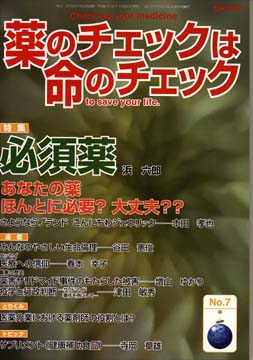

No.7 特集 必須薬 2004年8月 第3刷発行
あなたの薬 ほんとに必要？ 大丈夫？？
日常生活でも、これさえあれば、ごくふつうの生活ができるという必需品があります。大して必要もないのにあったらいいな、などといい加減な気持ちであれもこれも買っていると、お金の無駄遣いになって、肝心のものを買いたい時にしわ寄せがいっていることがあるでしょう。
薬は、生活用品とは違って、専門知識がない一般の方々には本当に必要なものとそうでないものの区別がつきにくいと思います。
「溺れるものはワラをもつかむ」ように、病気で苦しんでいる時、効く可能性があるというだけで、たとえ効くかわからないものでも「金に糸目はつけず」頼りたくなるかもしれません。「××で○○が完治」など、宣伝物か書物か、分からないような本がよく売れていることが、その気持ちを一番よく表しているでしょう。
けれども、実際によく効いてほしい、害が一番少ないものであってほしいと、だれも思うはずです。医療費もばかになりません。医療費が増加していて財政を圧迫しているため、病院医院の診療費や薬剤の値段（薬価）が問題にされますが、それよりも、もっと大切なことは、必要のある薬とそうでないものを区別して、不要なものが使われないようすることではないかと思います。
本誌『薬のチェックは命のチェック』では、具体的な薬について、必須、多くに必要、不要、危険なものを区別して特集してきました。以前の特集を読んだ読者は、それぞれの薬についてだいたいのイメージができていると思います。まだの方は既刊の本誌のいくつかを読んでいただければイメージができるでしょう。そこで今回は、本当に必要な薬とは、一体どんなものなのかを考えてみましょう。
「世界のエッセンシャルドラッグ」翻訳者の一人浜さんに聞いてみました。
もくじ
■海外からのメッセージ
エレン・トーエン氏 （国境なき医師団必須薬キャンペーン プロジェクト・コーディネーター）
特集
■必須薬とは？ 不要なものとは？ Q＆A
■コラム
・エッセンシャルドラッグ・モデルリストとは
・劇薬アセトアミノフェン？！
■商品名で覚えるのは間違いのもと！
必須薬の具体例：解熱剤、鎮痛剤、痛風用薬剤、
がんなどの強い痛み止め、リウマチ用剤、降圧剤、
狭心症の薬、抗不整脈剤、心不全用剤、心筋梗塞予防剤 など
連載
■リレーエッセイ 医療への信仰
■みんなのやさしい生命倫理 ７
生命倫理の歴史的な流れ（2）ローマ時代まで
■編集長インタビュー 阿部正子さん（編集者）に聞く
エッセンシャルドラッグで患者よ 自衛しよう！
■映画の中のクスリ（１） インスリン
■Coffeeぶれいく
宣伝にだまされないために（３）「アガリクス」
■薬害の歴史 ３
薬害サリドマイド事件のもたらした被害
疫学と行政判断―サリドマイド事件を例にして
■さようならブランド、こんにちはジェネリック
とりくみ
■医師（医療機関）とのつき合い方−NPOJIPへの相談事例から
医薬分業における薬剤師の役割とは？
■行ってきました その１
医療被害者救済の会設立ミニシンポジウム
■行ってきました その２
医療事故調査会シンポジウム
トピック
■サプリメント（健康補助食品）
提言
■NPOJIPの提言
日本でこそ、必須薬の考え方の普及を
■読者の声
・「高血圧ではなかった！」
■書評
・『乳がん―あなたの答えがみつかる本』
・『誕生死』
・『食べ物とがん予防』
■抗生物質の評価と価格リスト
■セミナー日程、参加申込用紙
■NPOJIP書籍申込み用紙
■編集後記
病院でよく聞く言葉
（特集にちなんだ言葉を簡潔に解説）忙しい人はまずここから
○薬価 −国際的に高すぎる水準
○ローカルドラッグ −日本だけで使用されている薬剤
（日本経済新聞に浜六郎が掲載していたものを改変。加筆、新しく追加したものを含む）
連載
薬害の歴史３より
疫学と行政判断―サリドマイド事件を例にして
津田敏秀 （岡山大学大学院医歯学部総合研究科・社会環境生命科学専攻）
編集部：今回は、薬害サリドマイド事件を被害者側からとらえるだけでなく、行政の立場にいる者が、当時入手できた情報から、どういう対処をとることができたか、あるいはできなかったかを、公害問題や疫学に詳しい津田さんに寄稿していただきました。
はじめに
これまで日本では、しばしば行政の対応の遅れにより薬害などの被害が拡大してしまうという指摘があった。しかし被害が拡大したから行政の対応の遅れが目立つだけで、適切な対応で被害が拡大せずに小さな事件で収まった場合には、その判断を下した行政官は、大した賛辞をもらうわけではない。また、製薬会社に対しては経済的コストを背負わせるわけであるから、製薬会社へと転職していった先輩方の受けも悪くなる可能性は充分ある。
私は、大学で疫学を教えているが、その際にデータの読み方と因果関係論や行政判断についても、できるだけ言及するようにしている。その時に用いるのが1950年代終わりから1960年代初めに起こったサリドマイド事件のデータである。科学的根拠に基づく医学医療（Evidence Based Medicine）という言葉は、今日かなり有名となっているが、科学的根拠に基づいた行政判断を学生に問いかけるのである。
長い引用になり申し訳ないが、以下の文章と表を読んでいただきたい。ただし単によむだけでなく、自らが厚生労働省食品医薬品局の担当課長になった気持ちで読んでいただきたい。全てが分かった後で薬害の責任を非難することは簡単である。しかし、実際に回収決定の最前線、即ち回収の責任者として立たされた時に、果たして皆さんは決断することができるだろうか？
（以下、引用省略）
詳しくは本誌で。